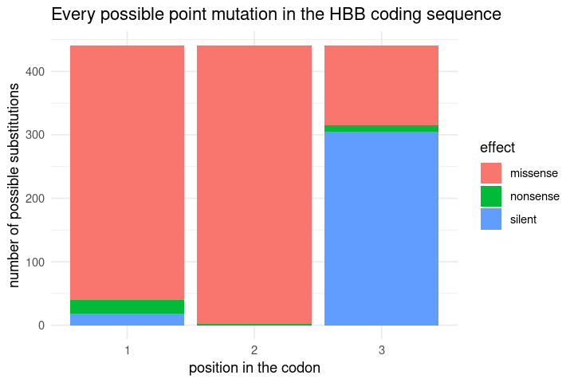

Exercise in R: Mutation & complementation
Goal
By the end of this exercise you should be able to:
- use a table as a lookup: turn the genetic code into a named vector and translate codons with it;
- write small functions that cut a sequence into codons, translate it, make a point mutation, and classify the mutation as silent, missense or nonsense;
- apply a function to every row of a table with
rowwise(), and summarise the effects of all possible point mutations in a gene.
Before you start
This page builds on B1 of the Exercise and on the str_sub() work in the DNA recap R exercise. You need the packages readr, dplyr, stringr, tidyr and ggplot2. Download two files and save them in a data/ folder of your R project:
- genetic_code.csv: the standard genetic code, 64 codons (DNA letters), with three-letter (
aa) and one-letter (aa1) amino acids. It was typed in and checked against NCBI translation table 1 (see data/README.md). - HBB_NM_000518.5.fasta: the HBB mRNA, the same file as in the DNA recap.
Tasks
New idiom: a named vector as a lookup table. A vector can have names, set with setNames(values, names). Then x["name"] returns the value with that name, and x[c("n1", "n2", "n1")] looks up many names at once, in order, with repeats. With codons as names and amino acids as values, translating a gene is a single lookup. (x[["name"]], with double brackets, returns the bare value without its name.)
library(readr)
library(dplyr)
library(stringr)
library(ggplot2)R1. (the genetic code as a named vector) Read the code table, make a named vector code, and look up a few codons. Then count how many codons each amino acid has. Which amino acids have only one codon, and how many stop codons are there?
code_tbl <- read_csv("data/genetic_code.csv")
code_tbl
code <- setNames(code_tbl$aa, code_tbl$codon) # names are codons, values amino acids
code["GAG"]
code[c("ATG", "TGG", "TAA", "GTG")]
code_tbl |> count(aa, sort = TRUE) |> print(n = 21)R2. (translate) Write codons(), which cuts a sequence into triplets with str_sub() and a vector of start positions, and translate(), which looks the triplets up in code. Translate the HBB coding sequence (positions 51–494 of the mRNA). How many codons are there, and what are the first ten and last three amino acids? Then translate to one-letter code with a second named vector, and compare with the UniProt sequence of β-globin (P68871), which starts MVHLTPEEKSAVTALWGKV.
codons <- function(dna) {
starts <- seq(1, str_length(dna) - 2, by = 3)
str_sub(dna, starts, starts + 2)
}
translate <- function(dna) {
unname(code[codons(dna)])
}
codons("ATGGTGCATCTG")
translate("ATGGTGCATCTG")
lines <- readLines("data/HBB_NM_000518.5.fasta")
hbb <- str_c(lines[-1], collapse = "")
cds <- str_sub(hbb, 51, 494)
protein <- translate(cds)
length(protein)
head(protein, 10)
tail(protein, 3)
code1 <- setNames(code_tbl$aa1, code_tbl$codon)
str_c(code1[codons(cds)], collapse = "")R3. (make a point mutation) Write point_mutation(dna, pos, new), which returns the sequence with the base at pos replaced. Make HbS (c.20A>T) and HbC (c.19G>A), translate them, and find which amino acid changed with which().
point_mutation <- function(dna, pos, new) {
str_sub(dna, pos, pos) <- new
dna
}
hbs <- point_mutation(cds, 20, "T") # c.20A>T
translate(hbs)[1:9]
which(translate(hbs) != protein)
hbc <- point_mutation(cds, 19, "A") # c.19G>A
translate(hbc)[7]R4. (classify a mutation) Write classify(dna, pos, new), which finds the codon that contains pos, compares the old and new amino acid, and returns "silent", "missense", "nonsense" or "stop-loss". The first base of the codon is (pos - 1) %/% 3 * 3 + 1 (%/% is integer division). Then classify the changes from B1 of the exercise, plus two real HBB nonsense alleles from ClinVar (c.118C>T and c.114G>A). Because classify() handles one mutation at a time, use rowwise() so that mutate() calls it once per row; the ref_ok column checks that the reference base is really there.
classify <- function(dna, pos, new) {
first <- (pos - 1) %/% 3 * 3 + 1 # first base of the codon that pos is in
old_codon <- str_sub(dna, first, first + 2)
new_codon <- str_sub(point_mutation(dna, pos, new), first, first + 2)
old_aa <- code[[old_codon]]
new_aa <- code[[new_codon]]
if (old_aa == new_aa) {
"silent"
} else if (new_aa == "Stop") {
"nonsense"
} else if (old_aa == "Stop") {
"stop-loss"
} else {
"missense"
}
}
classify(cds, 20, "T")
variants <- tibble(
name = c("HbS", "HbC", "codon 39 nonsense", "c.114G>A", "c.21G>A"),
pos = c(20, 19, 118, 114, 21),
ref = c("A", "G", "C", "G", "G"),
alt = c("T", "A", "T", "A", "A")
)
variants |>
rowwise() |>
mutate(ref_ok = str_sub(cds, pos, pos) == ref,
codon = (pos - 1) %/% 3 + 1,
effect = classify(cds, pos, alt)) |>
ungroup()R5. (every possible point mutation) How likely is a random point mutation in HBB to be silent, missense or nonsense? Make a table of every possible substitution in codons 1–147 (positions 1–441, leaving out the stop codon): each position × each of the three other bases. tidyr::expand_grid() makes all combinations of its arguments. Classify them all, count the effects, and plot them by position within the codon.
all_snvs <- tidyr::expand_grid(pos = 1:441, alt = c("A", "C", "G", "T")) |>
mutate(ref = str_sub(cds, pos, pos)) |>
filter(alt != ref) |>
rowwise() |>
mutate(effect = classify(cds, pos, alt)) |>
ungroup() |>
mutate(codon_position = (pos - 1) %% 3 + 1)
nrow(all_snvs)
all_snvs |> count(effect) |> mutate(fraction = n / sum(n))
all_snvs |> count(codon_position, effect) |> print(n = 20)
ggplot(all_snvs, aes(x = factor(codon_position), fill = effect)) +
geom_bar() +
labs(x = "position in the codon", y = "number of possible substitutions",
fill = "effect", title = "Every possible point mutation in the HBB coding sequence") +
theme_minimal()- Why are there 1323 rows?
- Which codon position gives most silent changes, and why? Which position gives (almost) no silent changes?
- Roughly what fraction of random point mutations in a coding sequence change the protein?
Solutions
All output below is from Rscript --vanilla run in the unit folder (messages from loading packages left out).
R1.
Rows: 64 Columns: 3
── Column specification ────────────────────────────────────────────────────────
Delimiter: ","
chr (3): codon, aa, aa1
ℹ Use `spec()` to retrieve the full column specification for this data.
ℹ Specify the column types or set `show_col_types = FALSE` to quiet this message.
# A tibble: 64 × 3
codon aa aa1
<chr> <chr> <chr>
1 TTT Phe F
2 TTC Phe F
3 TTA Leu L
4 TTG Leu L
5 TCT Ser S
6 TCC Ser S
7 TCA Ser S
8 TCG Ser S
9 TAT Tyr Y
10 TAC Tyr Y
# ℹ 54 more rows
GAG
"Glu"
ATG TGG TAA GTG
"Met" "Trp" "Stop" "Val"
# A tibble: 21 × 2
aa n
<chr> <int>
1 Arg 6
2 Leu 6
3 Ser 6
4 Ala 4
5 Gly 4
6 Pro 4
7 Thr 4
8 Val 4
9 Ile 3
10 Stop 3
11 Asn 2
12 Asp 2
13 Cys 2
14 Gln 2
15 Glu 2
16 His 2
17 Lys 2
18 Phe 2
19 Tyr 2
20 Met 1
21 Trp 1Only Met (ATG) and Trp (TGG) have a single codon; there are 3 stop codons (TAA, TAG, TGA). Arg, Leu and Ser have six codons each. 61 codons for 20 amino acids: the code is degenerate.
R2.
[1] "ATG" "GTG" "CAT" "CTG"
[1] "Met" "Val" "His" "Leu"
[1] 148
[1] "Met" "Val" "His" "Leu" "Thr" "Pro" "Glu" "Glu" "Lys" "Ser"
[1] "Tyr" "His" "Stop"
[1] "MVHLTPEEKSAVTALWGKVNVDEVGGEALGRLLVVYPWTQRFFESFGDLSTPDAVMGNPKVKAHGKKVLGAFSDGLAHLDNLKGTFATLSELHCDKLHVDPENFRLLGNVLVCVLAHHFGKEFTPPVQAAYQKVVAGVANALAHKYH*"148 codons: 147 amino acids plus the stop codon. The one-letter translation is identical to UniProt P68871 (147 amino acids, ending …ALAHKYH), with * for the stop.
R3.
[1] "Met" "Val" "His" "Leu" "Thr" "Pro" "Val" "Glu" "Lys"
[1] 7
[1] "Lys"HbS changes only amino acid 7 (Glu → Val), and HbC makes amino acid 7 Lys: p.Glu7Val and p.Glu7Lys.
R4.
[1] "missense"
# A tibble: 5 × 7
name pos ref alt ref_ok codon effect
<chr> <dbl> <chr> <chr> <lgl> <dbl> <chr>
1 HbS 20 A T TRUE 7 missense
2 HbC 19 G A TRUE 7 missense
3 codon 39 nonsense 118 C T TRUE 40 nonsense
4 c.114G>A 114 G A TRUE 38 nonsense
5 c.21G>A 21 G A TRUE 7 silentAll reference bases match. c.118C>T turns codon 40 (CAG, Gln) into TAG: p.Gln40Ter, “codon 39” in the traditional numbering, a common β0-thalassaemia allele. c.114G>A turns codon 38 (TGG, Trp) into TGA: p.Trp38Ter. Both are listed as pathogenic nonsense variants in ClinVar (rs11549407 and rs33974936).
R5.
[1] 1323
# A tibble: 3 × 3
effect n fraction
<chr> <int> <dbl>
1 missense 966 0.730
2 nonsense 34 0.0257
3 silent 323 0.244
# A tibble: 8 × 3
codon_position effect n
<dbl> <chr> <int>
1 1 missense 401
2 1 nonsense 22
3 1 silent 18
4 2 missense 439
5 2 nonsense 2
6 3 missense 126
7 3 nonsense 10
8 3 silent 305
- 441 positions × 3 alternative bases = 1323 possible substitutions.
- The third position gives most silent changes (305 of 441): the code is degenerate mainly in the third base (for example GAG and GAA are both Glu; four-codon families such as Ala GCN accept any third base). The second position gives no silent changes here: no two codons that differ only in their middle base code for the same amino acid. The first position gives a few (18), from the six-codon amino acids Leu (CTN/TTA, TTG) and Arg (CGN/AGA, AGG).
- About 75 % (73 % missense + 2.6 % nonsense) change the protein; about a quarter are silent. That is why most new mutations in coding sequence are at least potentially harmful, and why the third codon position varies most between species.
Where this leads
codons() and translate() come back in Part 4, where you scan all six reading frames of a sequence for open reading frames. The named-vector lookup is a small version of a join: in Part 4 you join whole tables of variants and population frequencies with left_join(). In the next unit, Gene expression (recap), you read a table of exon coordinates and summarise it with group_by() and summarise().